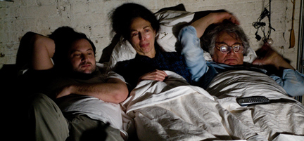
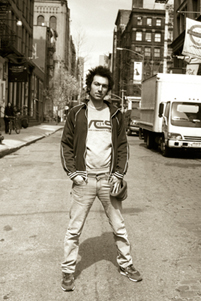

Directed by Azazel Jacobs; USA; 2008; 94 minutes

Pittsburgh Premiere
Awards
2007 Viennale Film Festival, Vienna, Austria, Standard Readers' Jury Award and Standard Readers' Jury Prize
2008 Sundance Film Festival, New York, Official Selection
2008 Rotterdam Film Festival Official Selection
2008 Off Camera Film Festival, Krakow, Poland, Grand Prize
2008 Independent Film Festival, Boston, Special Jury Prize
“Episodically structured, “Momma’s Man” catches the rhythm of life through drifty interludes, fragmented exchanges and moments so delicate they would break in rougher hands.” - The New York Times
Mikey doesn’t wake up as an insect, but with a development evocative of Kafka, he rises with an inability to leave his parents’ protection. Mikey is a grown man with all the status quo signs of success: a wife, a daughter, a job. He has an adult life in Los Angeles, but in his parents’ eclectic Tribeca apartment, he rediscovers old loves, old games and the old comforts of home minus the adolescent insecurities that propel us from embarrassing parents and the home lives that risk distinguishing us from our peers. In the case of director Azazel Jacobs, it is not just his main character that is returning home. Jacobs cast both his father Ken, a celebrated avant-garde filmmaker, and his mother, Flo, a painter, and set the majority of scenes in their real life apartment. His camera acknowledges the creativity of his upbringing while Mikey’s character probes further into what draws us home and captures us there when we least expect it.
Presented in conjunction with Film and Digital Technology Programs at Chatham
University

Azazel Jacobs
Much like the character of his third feature, director Azazel Jacobs grew up in Lower Manhattan with experimental director Ken Jacobs and his longtime collaborator-wife Florence as his parents, but many of the director-character similarities stop there. The name Azazel may create quite the stir amongst Israeli audiences for its reference to a fallen angel, booted from heaven, but the name Azazel Jacobs has recently been causing a stir amongst film audiences. Jacobs has been voted one of Filmmaker's Magazine 25 Faces of Independent Film for 2007 and one of MovieMaker Magazine's 10 Writer/Directors to watch for 2008. Jacob’s first full-length films, Nobody Needs to Know and The GoodTimesKid were low-budget collaborations with fellow AFI graduates and friends. In reference to budget restrictions in an interview, Jacobs said, “On top of it, we really love what we made. It's a home movie for us, on beautiful 35 MM. One of the things that's great about doing a film so cheaply that you're proud of is that it's always in the back of the mind that you hardly need anyone or anything to do what you love…. Momma's Man, armed with producers and a budget that would see it out to the end, I was - for the first time - able to see the film as a whole before beginning. It allowed me to only focus on directing, and to push each day for the film to be more and more of what I intended.”
Director Azazel Jacobs is scheduled to appear.
http://www.youtube.com/watch?v=Xiwejq0VsJU&feature=related
http://www.salon.com/ent/movies/btm/feature/2008/08/20/jacobs/index.html